《千里江山图》
此为北宋画家王希孟传世的唯一作品。作者以概括精练的手法、绚丽的色彩和工细的笔致表现出祖国山河的雄伟壮观，此图一向被视为宋代青绿山水中的巨制杰构。
《梵高的卧室》
这幅画是一幅具有荷兰传统的大型静物画。咖啡壶讲述了住进黄色屋子以后画家所发生的变化。在所有这些自画像中，这把草藤椅最引人注目。这把椅子处于强烈的阳光下、简朴的背景中，而高更的画像坐的据称是同一把椅子，却在夜间处于华丽的背景中——个人物品变成了一种比喻，象征着命运的不同。
《日出·印象》
《日出·印象》是法国印象派画家克劳德·莫奈于1872年在勒阿弗尔港口创作的一幅油画。该画描绘了晨雾笼罩中的日出港口景象，用美妙的光的变幻与运动展现了迷人景色，以及画家用轻快跳跃的笔触刻画了光在宽阔的海面上反射与颤动的生动景象。
《沉睡的海尔玛弗狄忒》
《沉睡的海尔玛弗狄忒》是十七世纪伟大的艺术大师乔凡尼·洛伦佐·贝尼尼备受争议的作品。传说海尔玛弗狄忒本是个人见人爱的美少年，美少女水仙子十分仰慕他，但是美少年不喜欢。。所以美少女为了永远和他在一起，就要求宙斯将他们的身体合二为一。从此美少年就成了雌雄同体。


国画
中国画按其使用材料和表现方法，又可细分为水墨画、重彩、浅绛、工笔、写意、白描等；按其题材又有人物画、山水画、花鸟画等。
了解更多
油画
油画的流派分为两大类。第一类是以客观的再现为主的创造性作品；第二类是以主观表现为主的创造性作品。
了解更多
水彩画
水彩画是用水调和透明颜料作画的一种绘画方法，简称水彩。
了解更多
国画 （中国传统绘画形式）
国画一词起源于汉代，汉朝人认为中国是居天地之中者，所以称为中国，将中国的绘画称为“中国画”，简称“国画”。主要指的是画在绢、宣纸、帛上并加以装裱的卷轴画。国画是中国的传统绘画形式，是用毛笔蘸水、墨、彩作画于绢或纸上。工具和材料有毛笔、墨、国画颜料、宣纸、绢等，题材可分人物、山水、花鸟等，技法可分具象和写意。中国画在内容和艺术创作上，体现了古人对自然、社会及与之相关联的政治、哲学、宗教、道德、文艺等方面的认知。
中国画历史悠久，远在2000多年前的战国时期就出现了画在丝织品上的绘画——帛画，这之前又有原始岩画和彩陶画。春秋战国最为著名的有《御龙图》帛画。它是在丝织品上绘画。这些早期绘画奠定了后世中国画以线为主要造型手段的基础。两汉和魏晋南北朝时期，域外文化的输入与本土文化所产生的撞击及融合，使这时的绘画形成以宗教绘画为主的局面，描绘本土历史人物、取材文学作品亦占一定比例，山水画、花鸟画亦在此时萌芽。隋唐时期社会经济、文化高度繁荣，绘画也随之呈现出全面繁荣的局面。山水画、花鸟画已发展成熟 ，宗教画达到了顶峰，并出现了世俗化倾向；人物画以表现贵族生活为主，并出现了具有时代特征的人物造型。五代两宋又进一步成熟和更加繁荣，人物画已转入描绘世俗生活，宗教画渐趋衰退，山水画、花鸟画跃居画坛主流。而文人画的出现及其在后世的发展，极大地丰富了中国画的创作观念和表现方法。元、明、清三代水墨山水和写意花鸟得到突出发展，文人画和风俗画成为中国画的主流，随着社会经济的逐渐稳定，文化艺术领域空前繁荣，涌现出很多热爱生活、崇尚艺术的伟大画家，历代画家们创作出了名垂千古的传世名画。
油画
油画是以用快干性的植物油（亚麻仁油、罂粟油、核桃油等）调和颜料，在画布亚麻布，纸板或木板上进行制作的一个画种。作画时使用的稀释剂为挥发性的松节油和干性的亚麻仁油等。画面所附着的颜料有较强的硬度，当画面干燥后，能长期保持光泽。凭借颜料的遮盖力和透明性能较充分地表现描绘对象，色彩丰富，立体质感强。油画是西洋画的主要画种之一。
油画的前身是15世纪以前欧洲绘画中的蛋彩画，后经尼德兰画家扬·凡·艾克（Jan Van Eyck），（1385年-1441年） 对绘画材料等加以改良后发扬光大。后人因扬·凡·艾克对油画艺术技巧的纵深发展做出的独特贡献，誉其为“油画之父”。近代油画多用亚麻子油调和颜料，在经过处理的布或木板上作画，因为油画颜料干后不变色，多种颜色调和不会变得肮脏，画家可以画出丰富、逼真的色彩。油画颜料不透明，覆盖力强，所以绘画时可以由深到浅，逐层覆盖，使绘画产生立体感。油画逐渐成为西方绘画史中的主体绘画方式，存世的西方绘画作品主要是油画作品。随着时间的发展油画逐渐生活化，其中最著名的就是《蒙娜丽莎》表现的一个普通妇女并广为流传。19世纪后期，由于科技发展，许多新材料应用于油画领域，如丙烯颜料，油漆等。
古典油画在整体上是油画语言等因素共时综合运用的结果，R.康平的三叶祭坛画《受胎告知》就细致地 呈现室内外的所有景物。意大利的提香是第1个特别注重油画色彩表现力的画家，他在暗底子上作画，并常用明度接近、色相略异的明亮色彩构成富丽堂皇的金黄色调，透明颜料的多次复叠，忽厚忽薄的笔法，又使色彩与形体有机溶合，造就出质感效果。从18世纪开始，油画艺术也同样在社会、文化、科技等多元因素的冲击下，有了翻天覆地、摧枯拉朽的变化。更多的流派、更多的思维、更丰富的创作、更深刻且影响更广的理论，激扬、解构、反叛，争奇斗艳、百花齐放。中国的油画最早出现在棺椁器具之中，据周礼、汉书等文献所记，二千多年前的中国已有用“油”绘画的历史。通常的说法是1581年利玛窦携天主、圣母像到中国后，才开始了中国的油画，其中一幅“木美人”作品，虽历时五百年，仍依稀可见画风的古朴厚重。
水彩画
水彩画是用水调和透明颜料作画的一种绘画方法，简称水彩，由于色彩透明，一层颜色覆盖另一层可以产生特殊的效果，但调和颜色过多或覆盖过多会使色彩肮脏，水干燥的快，所以水彩画不适宜制作大幅作品，适合制作风景等清新明快的小幅画作。水彩颜料携带方便，也可作为速写搜集素材用。与其他绘画比较起来，水彩画相当注重表现技法。其画法通常分“干画法”和“湿画法”两种。
水彩画就其本身而言，具有两个基本特征：一是画面大多具有通透的视觉感觉；二是绘画过程中水的流动性。由此造成了水彩画不同于其他画种的外表风貌和创作技法的区别。颜料的透明性使水彩画产生一种明澈的表面效果，而水的流动性会生成淋漓酣畅、自然洒脱的意趣。
水彩风景画的起源，最初是起源于“风土地形图”。18世纪地志学和制图术的发展给英国水彩画的形成产生了积极作用。到了19世纪中叶以后得到了迅猛发展，水彩画由最初的风土地形图逐渐发展成为独立的一个绘画门类，同时也确立了英国水彩画在世界美术史上的地位。水彩风景画是水彩画中的一个非常重要的题材，同时也最好的代表着水彩画的绘画风格。水彩风景有个很重要的特点就是注重写生，通过画家对光线、色彩、空气、景色的主观构造，从而构成新颖灵巧、色彩明亮、格调清新、用笔流畅的风景作品。
现代的水彩画艺术不但可以表现出具有清新、透明、湿润、流畅、欢快的效果，还可以达到浑厚、粗犷、劲拔等扣人心弦的境界。它善于汲取其它画种的有关技法和多种风格形式，不断丰富和发展水彩画艺术，保留并弘扬了水彩画在物质材料、形式语言、精神意蕴诸方面特有的艺术风貌。随着科技的进步，新的绘画材料的产生，20世纪水彩画已不再局限于透明水彩与不透明水彩两大范畴。市面上常见的能用水稀释作画的材料，如Gesso、压克力、透明水彩液、水彩铅笔等，都属于水彩画的领域。